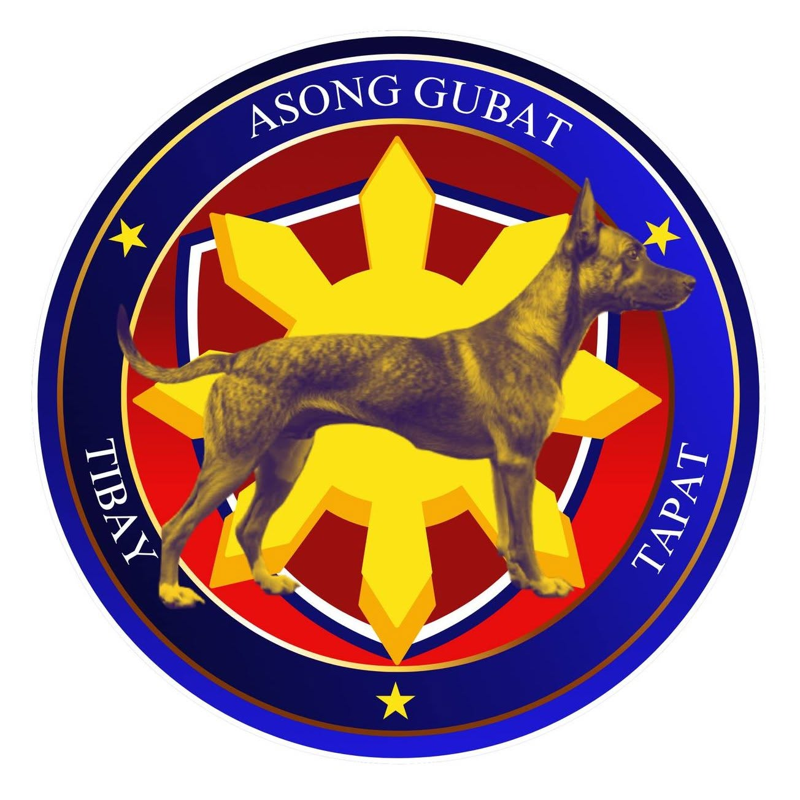
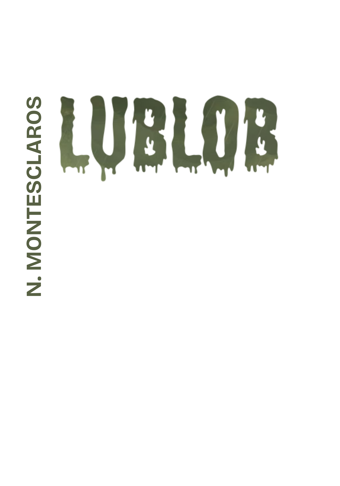
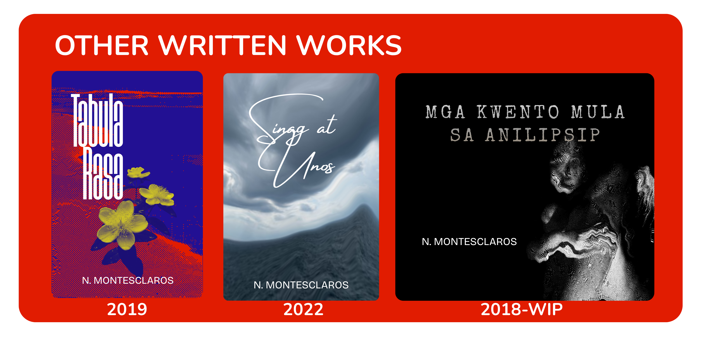
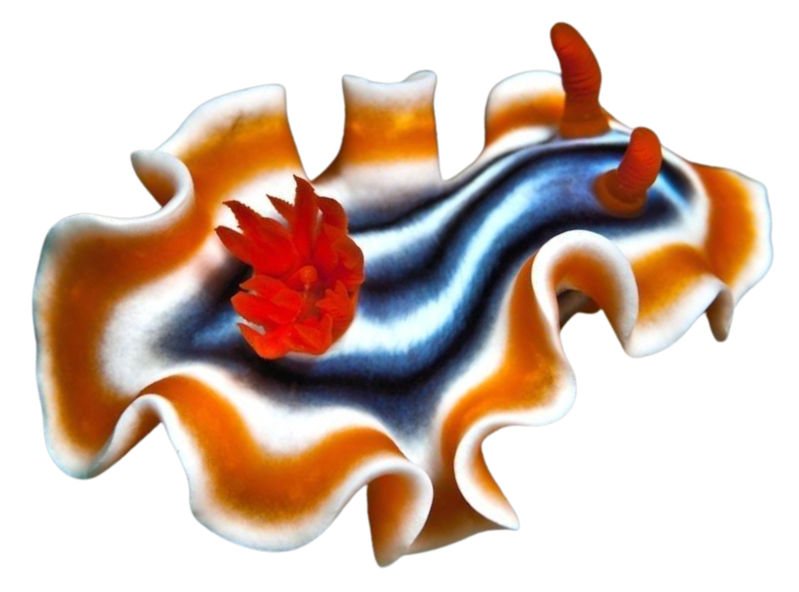
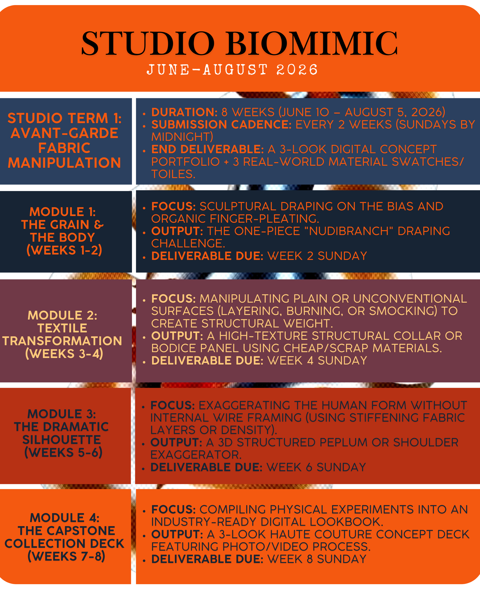

ABOUT ME
I am an Associate of Arts in Digital Design and Art sophomore at UPOU. Passionate about the intersection of art and technology, I focus on creating immersive digital narratives.
THINGS I LOVE
- Visual Arts
- Folklore and Mythology
- Natural Science
- Artificial Intelligence
- Biomimetic Design
PASSION PROJECTS

ASONG GUBAT PH
I launched Asong Gubat PH in 2025 to advocate for the Philippine Forest Dog and dive deeper into native canine heritage through research. I built this page as a dedicated space to practice graphic design, manage digital content, and connect with fellow PFD enthusiasts.

LUBLOB
Lublob is a YA graphic short story I wrote and illustrated in 2021, exploring Philippine folklore and mythology alongside environmental issues surrounding Laguna de Bay, poverty, and coming of age in an urban poor community. This project served as a way to engage deeply with local mythology while speaking on issues I've observed within my own surroundings.

STUDIO BIOMIMIC
Studio Biomimic is a personal project where I explore biomimicry through art. I utilize AI as a collaborative tool for curating resources and structuring terms to keep my workflow organized, while all creative concepts and outputs are solely mine. My first term, which lasted two months, focused on marine biomimicry—specifically analyzing the organic structures and patterns of nudibranchs to design an avant-garde couture collection. Beyond being a passion-driven outlet, Studio Biomimic is an intentional initiative to build a portfolio for future graduate studies in bio-integrated design and experimental sci-tech art.

